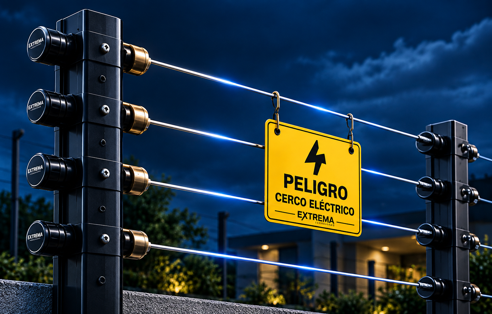
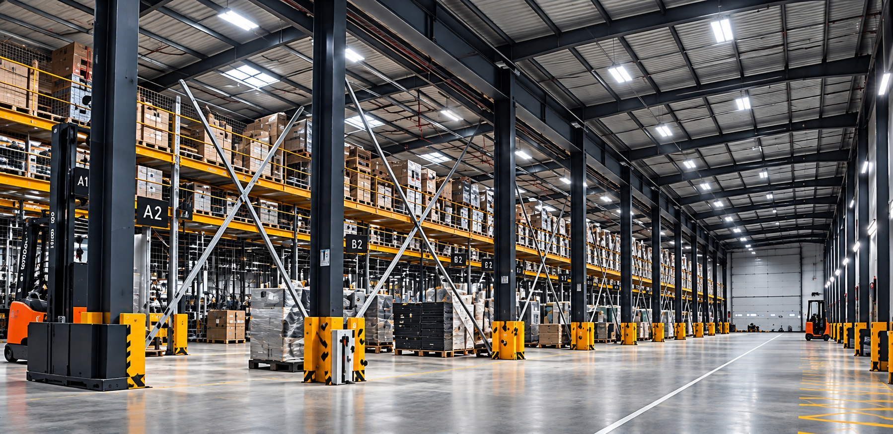
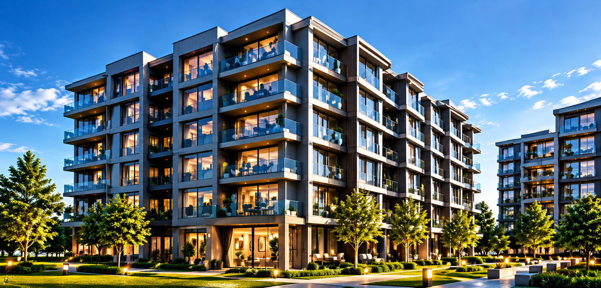

Cobertura perimetral
Diseñamos el recorrido para reforzar sectores vulnerables y mantener continuidad en el perímetro protegido.

Refuerza muros y cierres perimetrales con una barrera de seguridad diseñada según las dimensiones y características reales de tu propiedad.
Evaluamos el perímetro, la estructura disponible y los puntos de acceso antes de definir el trazado. La instalación considera montaje ordenado, componentes adecuados, señalización y pruebas de funcionamiento.
Diseñamos el recorrido para reforzar sectores vulnerables y mantener continuidad en el perímetro protegido.
Dimensionamos el sistema según el largo del cerco y las condiciones de la instalación.
Postes, aisladores y líneas quedan instalados buscando firmeza, orden y una terminación limpia.
Incorporamos señalización de advertencia como parte de una instalación correctamente identificada.
Según los equipos utilizados, el cerco puede complementarse con otros sistemas de seguridad del inmueble.
Verificamos continuidad y funcionamiento antes de entregar el sistema.
Cada instalación se evalúa según el lugar y el objetivo de seguridad, no como un paquete genérico.


Para cotizar un cerco, envíanos fotos del perímetro y una medida aproximada de los metros lineales que deseas proteger.